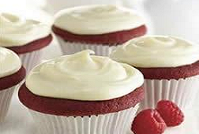

|  | Red velvet cake recipe with either a shady red, cheerful red or red-brown color. It is customarily equipped as a coat cake capped with cream cheese or heated roux glaze. |
Ingredients : 2 1/2 cups flour, 1/2 cup unsweetened cocoa powder, 1 box confectioners' sugar, 2 teaspoons McCormick Pure Vanilla Extract, 1/4 cup butter, softened, 2 tablespoons sour cream, 1 package cream cheese, softened, 2 teaspoons McCormick Pure Vanilla Extract, 1 bottle McCormick Red Food Color, 1/2 cup milk, 1 cup sour cream, 2 cups sugar, 4 eggs, 1 teaspoon baking soda, 1/2 teaspoon salt, 1 cup butter, softened. Method : Heat oven to 350 degrees F. Mix cover, baking soda, cocoa powder and salt in medium dish set apart. Tired butter and sugar in big bowl with electronic mixer on average speed 5 mint or till light and fluffy. Tired in eggs, single at a time. Blend in bitter milk, vanilla, food color and cream. Increasingly beat in cover mixture on small speed till just combined. Don’t overbeat. Serve hammer into 30 paper-lined muffin dishes, satisfying each cup 2/3 full. Bake 20 mints or till toothpick implanted into cupcake derives out clean. Cool in pots on wire frame 5 mints. Eliminate from pans cool entirely. Frost with Vanilla Cream Cheese Topping. Vanilla Cream Cheese Frosting: Beat cream cheese, butter, softened, sour cream and McCormick Pure Vanilla Cutting in large dish till light and fluffy. Gradually beat in confectioners' sugar till flat.
|
||||

Crispy Pizza
Crispy Pizza and Pressed Panini authentic recipe One of the very famous Street Italian food.
Golden Chicken
Crispy and curried Golden chicken recipe for cooking Golden Chicken ghastly.